السلسلة 4
الحافلة (صنف D) · 20 سؤال. كل سؤال فيه الصورة والصوت. اختار الجواب (ولا جوج إلا كانو صحاح)، ورك على «تأكيد» باش تشوف واش صبتي.
- 20سؤال
- 16باش تنجح
- 1 – 4جواب واحد ولا أكثر
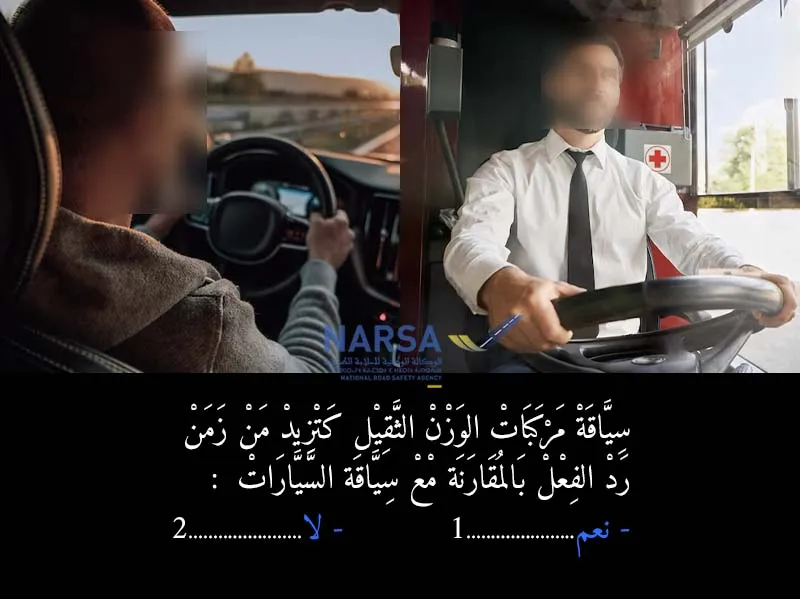
الكلافيي: 1–4 للجواب، Enter للتأكيد وللسؤال الجاي.
السلسلة 4 · النتيجة ديالك
0 / 20
السلسلة 4
الحافلة (صنف D) · 20 سؤال، بالصوت، مع الجواب الصحيح والشرح.
السؤال 1
بيّن الجواب
الجواب الصحيح: 1
قيادة مركبة ثقيلة 🚛 كتطلب مجهود ذهني وبدني أكبر 🏋️♀️، تركيز عالي 🧐، ووعي أكبر بالمحيط بسبب الحجم والوزن. هاد المجهود الزائد يقدر يسبب إرهاق أسرع للسائق 😵💫، وبالتالي يأثر على زمن رد الفعل ديالو مع مرور الوقت.
السؤال 2
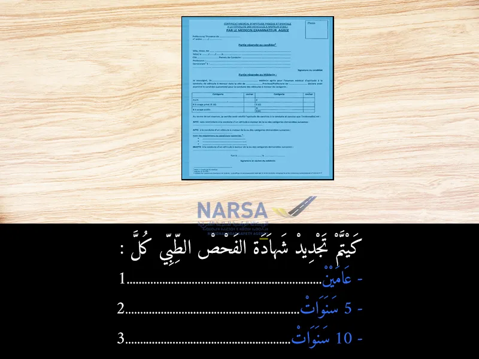
بيّن الجواب
الجواب الصحيح: 1
مدة تجديد شهادة الفحص الطبي كل عامين 🗓️للفئات التالية:
- السائقون المهنيون (بغض النظر عن السن). 🚛
- السائقون غير المهنيين الذين تجاوزوا 65 عاماً. 👵👴السؤال 3
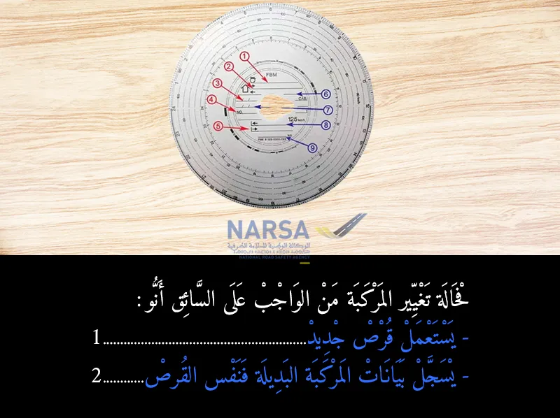
بيّن الجواب
الجواب الصحيح: 2
عندما يقوم سائق الشاحنة بتغيير المركبة خلال يوم عمله (مثلاً، إذا كان يقود شاحنتين مختلفتين في نفس اليوم)، فإنه لا يستخدم قرص تاكوغراف جديد لكل شاحنة. بدلاً من ذلك، يستمر في استخدام نفس القرص الذي بدأ به اليوم، ولكن يجب عليه يدويًا كتابة بيانات المركبة الجديدة (مثل رقم لوحة الترخيص) على القرص ✍️. هذا يضمن تتبع جميع الأنشطة (القيادة، الراحة) للسائق على قرص واحد، حتى لو كانت تتم بمركبات مختلفة، وهو أمر مهم للامتثال لقوانين أوقات القيادة والراحة. ⏱️
السؤال 4
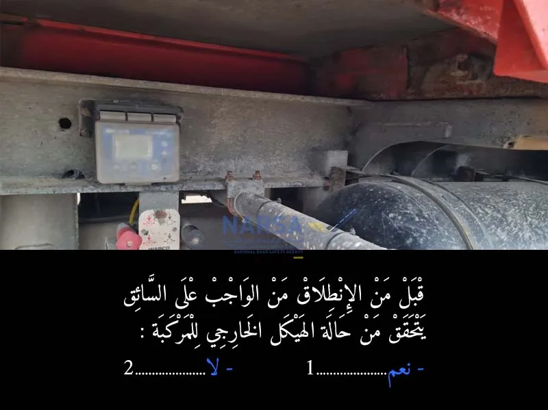
بيّن الجواب
الجواب الصحيح: 1
هذا السؤال يؤكد على أهمية الفحص اليومي للمركبة قبل الانطلاق 🔍. واجب على كل سائق، خاصة سائقي الشاحنات والمركبات الثقيلة، التأكد من أن الهيكل الخارجي للمركبة سليم ولا يوجد به أي أضرار قد تؤثر على السلامة أثناء القيادة، مثل:
الإطارات (الضغط، التآكل).
الأضواء والإشارات (تعمل بشكل صحيح).
المرايا والنوافذ (نظيفة وواضحة).
عدم وجود تسرب للسوائل.
تثبيت الحمولة بشكل صحيح.
هذه الفحوصات الروتينية تساهم بشكل كبير في الوقاية من الحوادث 🛡️ وضمان سلامة السائق والمستعملين الآخرين للطريق 🛣️.السؤال 5
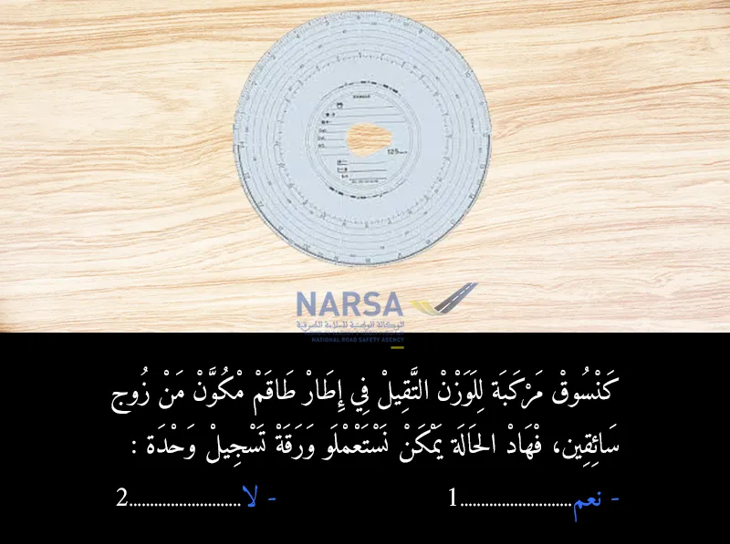
بيّن الجواب
الجواب الصحيح: 2
كل سائق يجب أن يستخدم قرصه الخاص 📄. بمعنى آخر، يتم وضع قرص السائق "أ" في الفتحة المخصصة للسائق رقم 1، وقرص السائق "ب" في الفتحة المخصصة للسائق رقم 2 في جهاز التاكوغراف الرقمي، أو يتم تبديل الأقراص في التاكوغرافات التناظرية مع تسجيل النشاط يدويًا عند التبديل.
السؤال 6
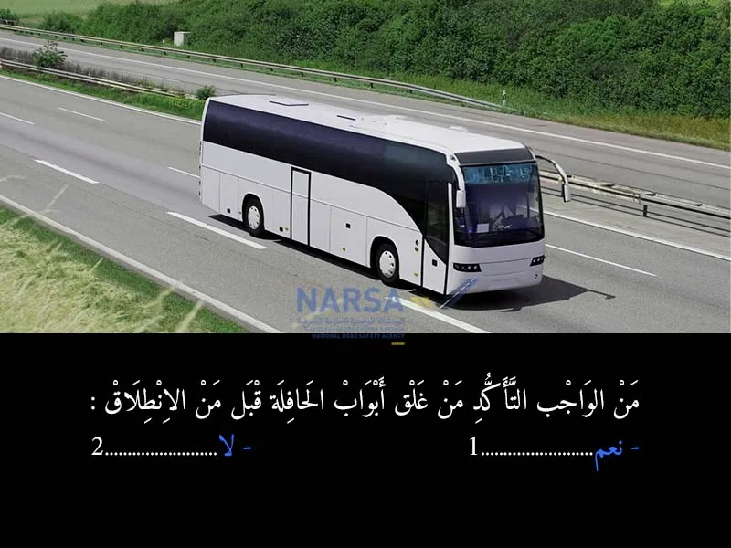
بيّن الجواب
الجواب الصحيح: 1
يجب على السائق دائمًا التأكد من إغلاق جميع أبواب المركبة (سواء كانت حافلة، سيارة، شاحنة، إلخ) بإحكام قبل البدء في التحرك، وذلك لضمان سلامة الركاب ومنع أي حوادث قد تنجم عن فتح الأبواب أثناء السير.
السؤال 7
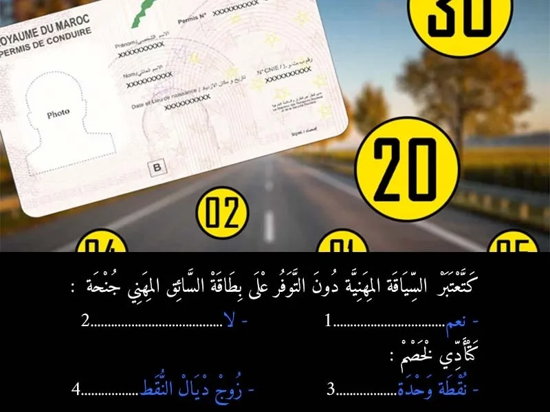
بيّن الجواب
الجواب الصحيح: 1 و 4
السياقة المهنية (بحال شاحنة أو طاكسي أو نقل الناس أو البضائع) خاص يكون عندك بطاقة السائق المهني، وهي وثيقة كتثبت أنك درتي التكوين المطلوب وكتستوفى الشروط لمزاولة المهنة.
إذا كنت كتسوق كمحترف وماعندكش هاد البطاقة، راه كتقوم بجنحة،
وهاد الجنحة كتعني مخالفة قانونية خطيرة، وكيكون عليها عقوبة مالية(2000 تال 5000 درهم) + خصم نقاط.
عدد النقاط اللي كتتحيد فهاد الحالة هو: 2 نقاط
هادشي كيبينه النظام الجديد للنقط فمدونة السيرالسؤال 8
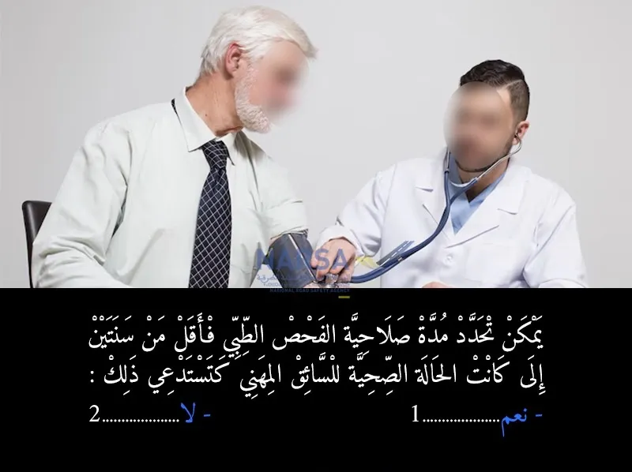
بيّن الجواب
الجواب الصحيح: 1
الفحص الطبي ديال السائقين المهنيين كيكون عندو مدة صلاحية عادية هي كل سنتين، ولكن إلى كانت الحالة الصحية ديال السائق ماشي مستقرة أو فيها مشكل، الطبيب كيعطيه صلاحية أقل من سنتين، باش يراقبوه من جديد فمدة قصيرة.
بحال مثلاً:
إلى كان السائق كيعاني من مرض مزمن (بحال السكري، الضغط، مشاكل فالنظر...)، الطبيب من حقو ينقص المدة ديال صلاحية الفحص الطبي ويطلب يعاود الفحص قبل ما تكمل عامين.
المرجع القانوني:
هادشي منصوص عليه فـ القانون رقم 52.05 المتعلق بمدونة السير على الطرق،
وكيأكدو عليه فـ النصوص التطبيقية، خصوصاً اللي كتهم الفحص الطبي المهني.
الخلاصة:
إيلا كانت الحالة الصحية كاتستدعي، الطبيب يقدر يحدد مدة الصلاحية ديال الفحص الطبي أقل من عامينالسؤال 9
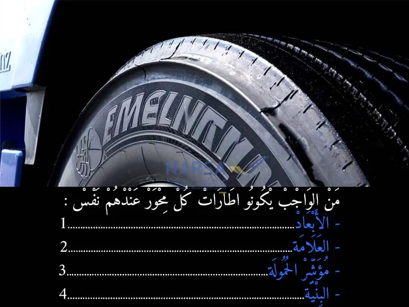
بيّن الجواب
الجواب الصحيح: 1 و 3 و 4
لضمان السلامة والاستقرار والأداء الأمثل للمركبة، خاصةً الشاحنات والحافلات، يجب أن تكون الإطارات على نفس المحور متطابقة في خصائصها الأساسية. هذا يشمل:
الأبعاد (الحجم): لضمان أن يكون لكل إطار نفس قطر الدوران، وبالتالي توازن السيارة وعدم وجود إجهاد على نظام التعليق أو نقل الحركة. 📏
مؤشر الحمولة: لضمان أن كلا الإطارين يمكنهما تحمل نفس الوزن الموزع عليهما، مما يمنع التحميل الزائد على إطار واحد. ⚖️
البنية (التركيبة): يجب أن تكون الإطارات إما كلها "قطرية" (Radial) أو كلها "متحيزة" (Bias) على نفس المحور. خلط أنواع البنية يؤثر سلباً على التحكم والاستقرار والفرملة. ⚙️
أما "العلامة التجارية" (النقطة 2)، فليس من الضروري أن تكون متطابقة، على الرغم من أن الأفضلية غالبًا ما تكون لاستخدام نفس العلامة التجارية على نفس المحور إن أمكن، ولكنها ليست إلزامية من الناحية الفنية للسلامة مثل النقاط الأخرى. 🏷️السؤال 10
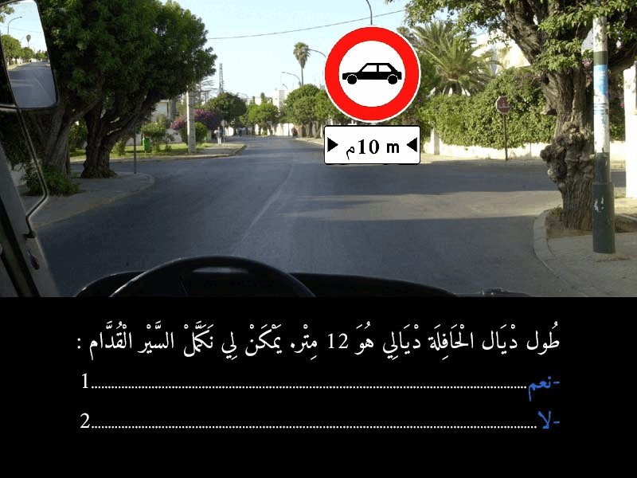
بيّن الجواب
الجواب الصحيح: 2
علامة تحديد الطول: الصورة تظهر بوضوح علامة تحدد أقصى طول مسموح به للمرور وهو 10 أمتار. 📏
طول الحافلة: السؤال يذكر أن طول الحافلة هو 12 متر. 🚌
المقارنة: 12 متر (طول الحافلة) أكبر من 10 أمتار (الحد الأقصى المسموح به). 🚫
بما أن طول الحافلة يتجاوز الطول الأقصى المسموح به للمرور في هذا الطريق، فإنه ممنوع عليك متابعة السير للأمام. إذا حاولت المرور، فإنك تخاطر بأن تعلق الحافلة أو تتسبب في صعوبة في المناورة في المنعطفات، مما قد يؤدي إلى حوادث أو أضرار.السؤال 11

بيّن الجواب
الجواب الصحيح: 1
- كَتَعْلَن هَاد العلامة عَلَى أَنَّ السُّرْعَة القصوى مُحَدَّدة ف 60 كيلومتر / ساعة بالنسبة للْمَرْكَبَاتِ اللَّي الْوَزْن الْإِجْمَالِي دْيَالُهَا مُعَ الْحُمُولَة أَكْثَر من الْعَدَدِ الْمُشَارِ إِلَيْهِ فَالْعَلَامَةِ.
- الوزن الْإِجْمَالِي دْيَال الحافلة مُعَ الْحُمُولَة 13 طن، أَكْثَر من الْعَدَدِ الْمُشَارِ إِلَيْهِ فَالْعَلَامَةِ لي هو 12 طن ، فهذا يعني أن السرعة غادي تحدد في 60 كلم في الساعة.السؤال 12

بيّن الجواب
الجواب الصحيح: 2
بما أن وزن المحور الأكثر حمولة في الحافلة (5.8 طن) يتجاوز الحد الأقصى المسموح به (5 طن) حسب العلامة المرورية، فإن الحافلة ممنوعة من الدوران إلى اليسار. العلامة تحدد بوضوح قيدًا على وزن المحور، وحافلتك تتجاوز هذا القيد.
السؤال 13

بيّن الجواب
الجواب الصحيح: 2
علامة المنع الرئيسية: دائرة حمراء بها صورة شاحنة سوداء (تطبق على المركبات الثقيلة بما في ذلك الحافلات)، وبها سهم متجه للجانب مكتوب تحته "9 m". هذه العلامة تعني "ممنوع مرور المركبات أو مجموعات المركبات التي يتجاوز طولها الإجمالي 9 أمتار". 🚫📏
- بما أن طول حافلتك يتجاوز الحد الأقصى المسموح به للدخول إلى الطريق المشار إليه بالعلامة (الذي يقع أمامك أو إلى اليسار)، فلا يمكنك الدوران إلى اليسار. ولكن، يمكنك الدوران إلى اليمين لأن هذا الاتجاه لا يبدو محظورًا بهذه العلامة.السؤال 14
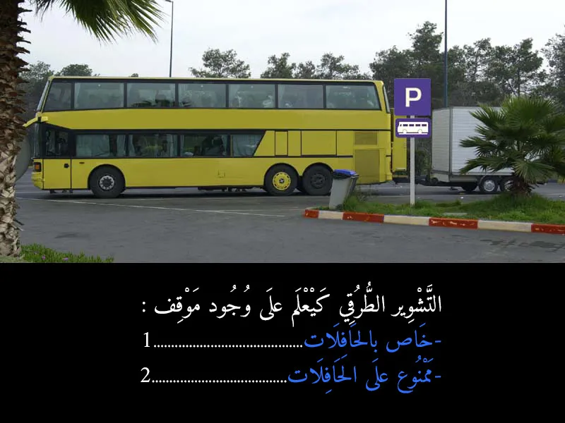
بيّن الجواب
الجواب الصحيح: 1
علامة "P" الزرقاء: تدل على وجود موقف سيارات.
صورة الحافلة تحت "P": عندما تكون هناك صورة مركبة تحت علامة "P"، فإنها تحدد نوع المركبات التي يُسمح لها بالوقوف في هذا الموقف. في هذه الحالة، الصورة هي لحافلة، مما يعني أن الموقف خاص بالحافلات أو مخصص لوقوفها. 🚍
- إذن، اللافتة تعلم بوجود موقف خاص بالحافلات. 🅿️🚌السؤال 15

بيّن الجواب
الجواب الصحيح: 2 و 3
هنا، حنا قربنا لسكة ديال التران. واخا الحاجز ديال السكة الحديدية اللي كينزل ويطلع راه طالع الفوق، وهادشي كيعني بلي تقدر دوز، ولكن خاصك ترد البال بزاف.
- لا! ما يمكنش ليك تخلي نفس السرعة. هادي بلاصة ديال خطر كبير، وخا يكون كلشي كيبان مزيان. السرعة الزايدة فهاد البلاصة تقدر تسبب كوارث.
- ضروري تتأكد بعينيك بجوج جهات ديال السكة واش ما جاي حتى شي تران، وواش ما كاين حتى شي حاجة فالطريق. واخا الحاجز طالع، ديما خاصك تزيد تتأكد قبل ما تدوز. هادي هي السلامة الحقيقية.السؤال 16

بيّن الجواب
الجواب الصحيح: 2
ملي كتكون الطريق ضيقة بزاف وميمكنش يدوزو جوج طوموبيلات فـ نفس الوقت (التقابل غير ممكن)، القاعدة هي أن المركبة الأكبر حجماً أو الأثقل وزناً هي اللي خاصها تعطي حق الأسبقية للمركبات اللي صغر منها. فالصورة، حنا فـ كاميو، والطوموبيل اللي جاية من قدامنا صغر من الكاميو. لهذا، حنا اللي خاصنا نوقفوا ونعطيوها حق الأسبقية باش دوز هي الأولى.
بالإضافة، في بعض الحالات، العربة اللي هابطة خاصها تعطي حق الأسبقية للعربة اللي طالعة (إلا إذا كانت العربة اللي هابطة هي الأكبر حجماً). في هذه الحالة، الكاميو كيبان طالع شوية في منحدر. لكن القاعدة الأساسية هي حجم ووزن المركبة.السؤال 17
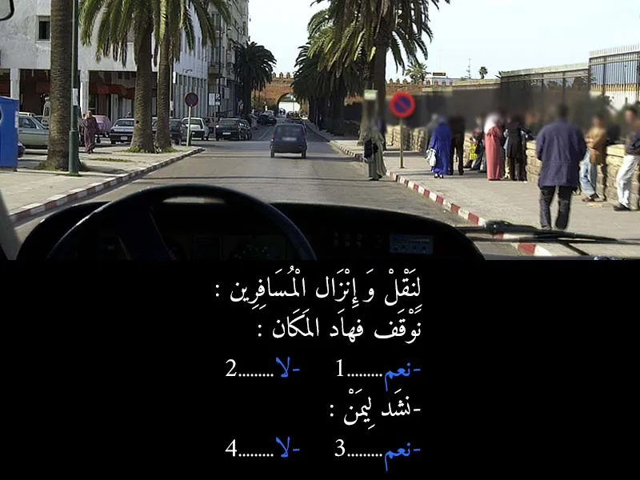
بيّن الجواب
الجواب الصحيح: 2 و 3
لا يمكنك التوقف في هذا المكان لإنزال أو نقل المسافرين لأنه ممنوع (لوجود علامة وتشوير ممنوع التوقف). ولكن، يجب عليك الاستمرار في السير والالتزام بأقصى اليمين من الطريق كقاعدة عامة للسير.
السؤال 18

بيّن الجواب
الجواب الصحيح: 1
ملي كتكون عربة كبيرة بزاف، خاصك ديما تنقص من السرعة ديالك خصوصاً ملي كيكون شي واحد جاي من قدامك (بحال الكار اللي فـ الصورة). وهادشي كيخليك تتحكم مزيان فالكاميو ديالك، وكتعطي المساحة الكافية باش دوز العربة الأخرى بأمان. وضروري تشد اليمين ديالك باش تخلي الطريق للعربات الأخرى وتتجنب أي خطر ديال التقابل. هادشي كيتعتبر من قواعد السياقة الدفاعية والوقاية من الحوادث.
السؤال 19

بيّن الجواب
الجواب الصحيح: 2
يُعتبر متوسط رد فعل السائق العادي والمنتبه حوالي ثانية واحدة. ⏱️
هذه الثانية الواحدة هي المدة الزمنية اللازمة للسائق:
إدراك الخطر أو الحاجة لاتخاذ قرار (مثلاً، رؤية ضوء الفرامل في السيارة الأمامية).
تحليل الموقف واتخاذ قرار (الضغط على الفرامل).
تنفيذ القرار (نقل القدم من دواسة الوقود إلى دواسة الفرامل والضغط عليها).السؤال 20

بيّن الجواب
الجواب الصحيح: 2 و 3
- حسب مدونة السير على الطرق في المغرب، التحدث بالهاتف ممسوك باليد أثناء السياقة يعتبر مخالفة خطيرة، وهي من الدرجة الثانية.
- إضافة إلى الغرامة المالية، هاد المخالفة كتأدي لخصم نقط من رخصة السياقة. المخالفات من الدرجة الثانية كيتم خصم نقطتين من رخصة السياقة عليها.